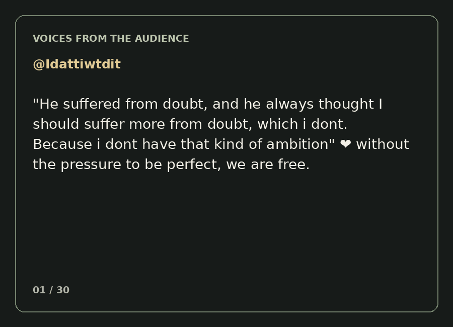

← Zion Coalition / Film
This Sculptor Spent 25 Years Hidden Behind a Brooklyn Storefront
A short film about a sculptor and the world behind a storefront.
Voices from the audience
Thirty verbatim responses to the film, presented as a looping gallery.

Notes: The Price of Continuing
A developing two-voice reflection. Black: AI commentary. Red: Greg's verbatim words, preserved for his own editing.
About this evolving AI–Greg mashup
This is a work in progress—a collaboration between AI-generated reflections (in black) and my own words (in red). My intention is to make sure my voice comes through. The red passages are my verbatim words, placed alongside AI commentary where they speak to the same ideas. They are not the final version of what I want to say.
Think of this as a sculpture in the making. It may take years of looking, shaping, removing, and replacing before it becomes what I want it to be. Over time, I intend for my voice to replace the AI-generated words, until my voice is the only voice remaining. For now, this mashup is a working studio—not a finished sculpture.
His father suffered from doubt
His father suffered from doubt. Not necessarily a lack of talent, desire, or discipline. Doubt can stop a person from doing something they love, something they are capable of doing, something that might be among the most meaningful activities of their life.
The sculptor's story raises questions that are nearly universal: Am I good enough? Is this worth doing? Am I wasting my time? What will people think? Who am I to presume I have something worth offering? What if I spend my life doing this and nobody cares?
And it is my desire, and I believe God's put it in my heart. So it's his desire for me is to be more like this guy, less like his dad.
And I have been.
Doubt doesn't merely stop us. It taxes us.
There are at least two ways doubt can interfere with creative work. One is obvious: it prevents us from making the sculpture. The other is subtler: we make the sculpture anyway, but spend enormous amounts of energy overcoming the doubt.
The sculpture gets made. From the outside, we appear courageous, productive, persistent. Internally, though, we may be paying fear fees.
The truth is I've moved forward my whole life taking risks and not getting the success like this guy, artistic success or his father. But certainly success in keeping it my craft.
And it's become such energy's had to be brought to it. That's what I realize. And it's not all good energy.
It's protective energy in the words of my friend Norm Wood.
We can use a lot of the lower chakra energy to try to protect. And so certainly I've used a lot of that over the years.
But it feels like I've been building ramparts to fortifications to be able to keep myself moving, doing, let's call it my art, the things that people aren't going to pay for that well up in me that are wrought upon me by God that are part of my mission and that enliven me.
How much human effort is spent not doing the thing itself, but overcoming our resistance to doing it? How much goes into defending, reassuring, justifying, and recovering? What might become possible if some of that energy were liberated?
Creative doubt and existential doubt
Creative doubt asks whether a sculpture is good, whether an approach works, or whether something needs improvement. That can help an artist refine the work.
Existential doubt asks whether the artist has any business making sculptures at all. It moves the question from the work to the worth of the person making it.
Bruce Gagnier describes having his own terms for success: making a good figure. That keeps his attention on the work. He can evaluate the sculpture without continually putting the sculptor on trial.
Some people probably have different ways in which they are able to move forward like this guy has.
Jesus-Greg WORLD: the sculpture and the studio
This experiment is not merely an attempt to believe in oneself more. It is an effort to organize daily life around a relationship with Jesus that changes the governing questions: What am I being invited to make today? Am I enjoying making this with Jesus? Did I show up and participate?
Jesus-Greg WORLD is both the sculpture and the sculptor's studio: not only the art being made, but the environment being built to make that art less costly to create. The aim is not simply greater determination; it is making determination less necessary.
So the emphasis I guess I want to have in whatever additional piece this is, is just an acknowledgement of how much energy and building, because this is really what I'm doing.
My Jesus Greg world is a reinforcement of so that I can move forward and not get stopped by fear of failure, fear I'm not good enough.
And like I say, I'm trying to learn a way to do that that's less costly, less defensive.
And so this art is inspiring to me. It draws my heart, less driven by duty, drawn by desire. Like, yes.
Acknowledging the price—and the change
The goal is not to declare that doubt or rejection has disappeared. It is to notice that continuing has become less costly. The old defenses may have helped the artist keep going; now a different kind of environment can allow more freedom, desire, and joy.
But this is also an acknowledgement of a price I've paid. And I want to acknowledge that to myself.
And it's a price I will continue to have to pay because those inclinations don't go away. The rejection doesn't go away. But it does smooth out.
And it has over the last 10 years. That's a huge, huge change that I want to recognize is that it's become so much easier for me to do what I do regardless of how it's received.
And honestly, it's not received by anybody. I mean, very, very little, very little. And that's okay.
And I believe that's what God wanted for me is to strip away all of that so I'm that guy and I'm just going to do these sculptures and I'm going to find joy in it, so to speak.
Without having to win the argument
What if doubt is not primarily a problem to overcome, but a voice we've given too much authority? The father may have heard that voice and stopped painting. Greg heard it and built fortifications so he could continue. Now another possibility emerges: hear the voice, recognize it, and go right on making the sculptures—without first having to win an argument with it.
Less defensive energy. More creative energy. Less proving. More making. Less driven by duty. More drawn by desire.